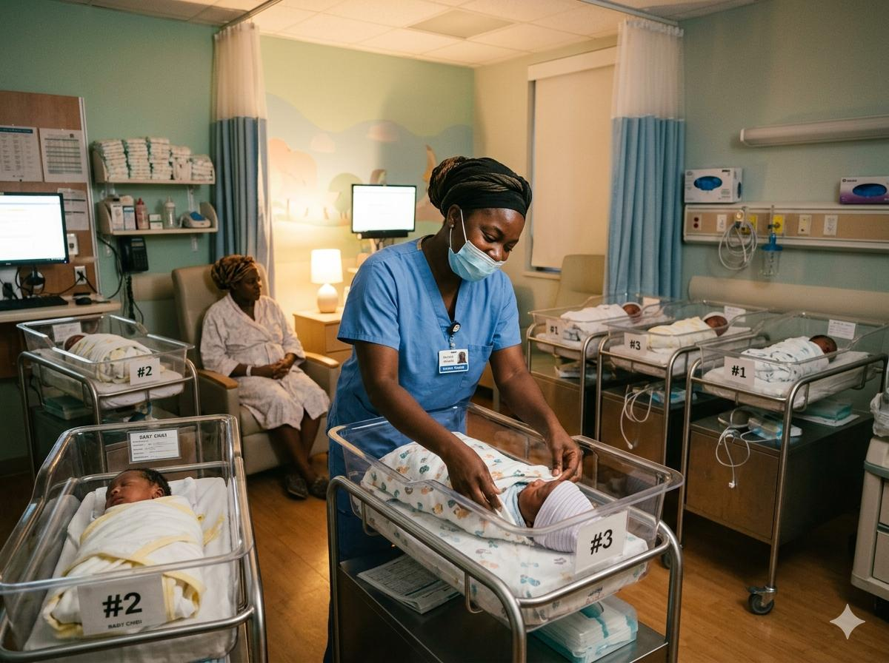

Un espace dédié à la naissance et à la maternité, où chaque maman et chaque bébé reçoivent des soins attentionnés dans un environnement sécurisé et bienveillant.
La maternité de la Polyclinique Kennedy vous accompagne tout au long de votre grossesse, de la première consultation jusqu'à la naissance de votre bébé et au-delà. Notre équipe de gynécologues-obstétriciens et de sages-femmes expérimentés est à vos côtés pour vivre cette expérience unique dans les meilleures conditions.
Nous offrons un environnement chaleureux et sécurisé, équipé des technologies médicales modernes pour assurer la sécurité de la mère et de l'enfant. Que votre accouchement soit naturel ou nécessite une césarienne, notre équipe est prête à intervenir 24 heures sur 24.
Notre philosophie : respecter vos choix, vous écouter et vous accompagner avec bienveillance pour que la naissance de votre enfant soit un moment inoubliable.

De la conception à l'après-naissance, nous vous accompagnons à chaque étape de votre parcours maternel.
Consultations prénatales régulières avec nos gynécologues-obstétriciens pour surveiller votre santé et le développement de votre bébé.
Échographies de suivi de grossesse avec équipements de dernière génération pour visualiser le développement de votre bébé.
Salle d'accouchement moderne et équipe médicale disponible 24h/24 pour vous accompagner le jour J en toute sécurité.
Accompagnement après l'accouchement pour la mère et le nouveau-né, avec soutien à l'allaitement et conseils de puériculture.
Prise en charge spécialisée des nouveau-nés nécessitant des soins particuliers, notamment les bébés prématurés.
Conseils et accompagnement pour la planification de votre famille, avec différentes options de contraception.
Notre maternité rassemble une équipe pluridisciplinaire passionnée, entièrement dévouée à l'accompagnement des futures mamans et de leurs bébés.
Chambres individuelles équipées pour votre confort et celui de votre bébé pendant votre séjour.
Salle d'accouchement moderne équipée de tout le matériel nécessaire pour un accouchement en toute sécurité.
Bloc opératoire aux normes pour les césariennes, avec équipe chirurgicale disponible 24h/24.
Équipement d'échographie de dernière génération pour un suivi optimal de votre grossesse.
Surveillance continue du rythme cardiaque fœtal pendant le travail et l'accouchement.
Couveuses modernes pour les soins aux nouveau-nés prématurés ou nécessitant une surveillance.
Première consultation, confirmation de grossesse, échographie de datation et mise en place du suivi personnalisé.
Échographie morphologique, consultations mensuelles, analyses de suivi et conseils pour une grossesse sereine.
Préparation à l'accouchement, consultations rapprochées, échographie de croissance et monitoring.
Accueil en salle de naissance, accompagnement pendant le travail, accouchement et premiers soins au bébé.
Repos, soins au nouveau-né, aide à l'allaitement, conseils de puériculture et préparation au retour à domicile.
Consultation post-partum, suivi du bébé, vaccination et accompagnement des premiers mois de vie.
J'ai accouché de mon premier enfant à la Polyclinique Kennedy et je ne regrette pas mon choix. L'équipe de sages-femmes a été formidable, toujours à l'écoute et rassurante.
Ma césarienne s'est très bien passée grâce au professionnalisme de l'équipe. Le suivi après l'accouchement était excellent et j'ai pu rentrer chez moi en toute confiance.
Mon bébé est né prématuré et l'équipe de néonatalogie a été exceptionnelle. Ils m'ont accompagnée et soutenue pendant toute cette période difficile. Merci infiniment !
Prenez rendez-vous dès maintenant pour votre suivi de grossesse ou pour visiter notre maternité. Notre équipe se fera un plaisir de vous accueillir.